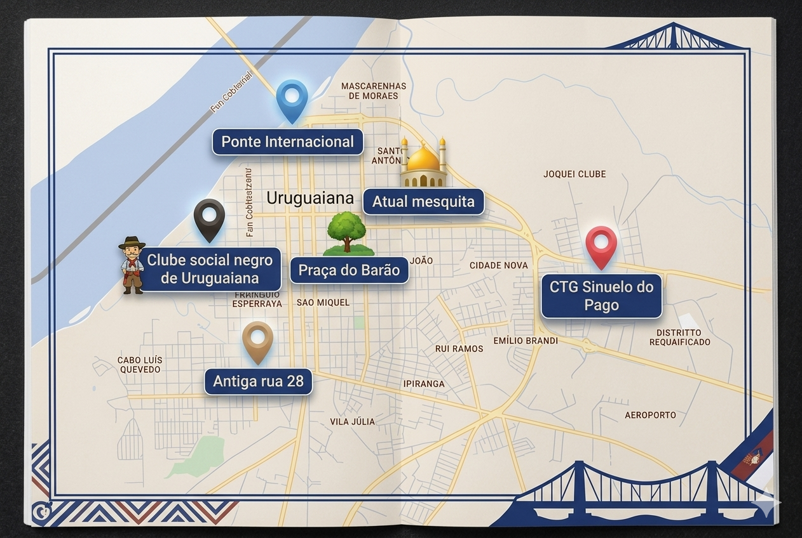

Explore monumentos, espaços históricos, causos e memórias da nossa comunidade. Cadastre-se para contribuir com a história da cidade.
Explore os pontos históricos da cidade
Memórias, causos e fotografias
Contribua com a história local